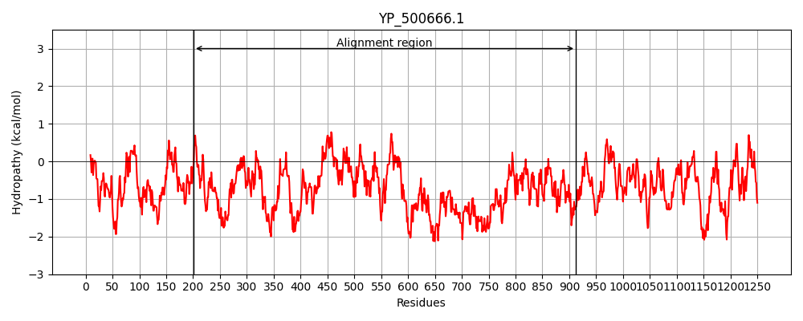
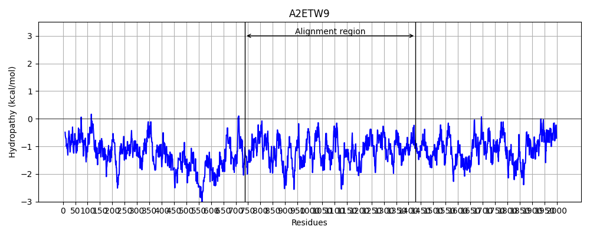
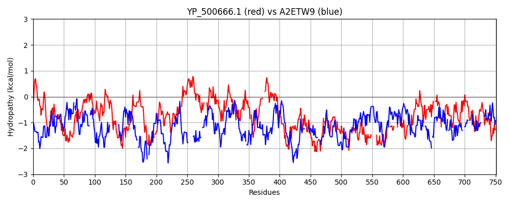

Hit Accession: A2ETW9
Hit TCID: 1.C.105.2.2
Hit Description: gnl|BL_ORD_ID|249 gnl|TC-DB|A2ETW9|1.C.105.2.2 Viral A-type inclusion protein, putative OS=Trichomonas vaginalis GN=TVAG_192230 PE=4 SV=1
Mach Len: 751
e:0.000000
Query TMS Count : 0
Hit TMS Count: 0
TMS-Overlap Score: 0.000000
Predicted Substrates:CHEBI:3473;cation
BLAST Alignment:
Score: 137 , Bit scores: 57 bits, E-value: 4.9e-08, Alignment length: 751, Percentage identity: 19
Query: 201 KIDMSEIKTALIAVGPENDKGKRLELVVTDDEAQSQFNLPTRYIWGIYEPQSDDQNMNETRLRSLAKTELNKRKSAVMSYEITSTDLEVTYPHEIISIGDTVRVKHRDFNPPLYVEAEVIAEEYNIISENSTYTFGQPKEFKESELREEFNKRLNIIHQKLNDNISNINTIVKDVVDGELEYFERKIHKNDTPPENP-VNDMLWYDTSNPDVAVLRRYWNGRWIEATPNDVEKLGGITRE-KALFSELNNIFINLSIQHASLLSEATELLNSEYLVDN----DLKADLQASLDAVIDVYNQIKNNLESMTPETATIGRLVDTQALFLEYRKKLQDVYTDVEDVKIAISDRFKL-LQSQYTDEKYKEALEIIAT---KFGLTVNEDLQLVGEPNVVKSAIEAARESTKEQLRDYVKTSDYKTDKDGIVERLDTAEAERTTLKGEIKDKVTLNEYRNGLEEQKQYTDDQLSDLS-NNPEIKASIEQANQEAQEALKSYIDAQDNLKEKESQAYADGKISEEEQRAI-QDAQAKLEEAKQNAELKARNAEKK--------ANAYTDNKVKESTDAQRR----TLTRYGS-----QIIQNGKEIKLRTTKEEF----NATNRTLSNILNEIVQNVTDGTTIRYDDNGVAQALNV---GPRGIRLNAD---KIDINGNREINLLIQNMRDKVDKTDIVNSLNLSREGLDINVNRIGIKGGNNNRYVQIQNDSIELGGIVQRTWKGKRSTDDIFTRL 912
+ + +E+++ + EN+K +L+ + Q + + I + + +N + +++ +L + E+++ K+ + + + LE T EI + ++ + + N L + E +++E N E K + + L+++ ++N+ ++N+N D++ E E +R+ K +T EN + D L + N + ++ V L G E K+ ++ N + LL + E L S+ +DN L ++ + L A+ + ++K +E + E + L E KL + + +K +++ K+ LQ+ +++ K L + K G E Q++ + N S E + + + K + + + + + A+ E +LK ++EY N EE KQ ++ DLS N + + IE QE +E N + + ++ +E + I +++ KLE K ++L + ++K A + NK E Q + + Y S Q + K IKL T N ++ L N+ ++Q + + +R++++ + Q N+ + ++L D ++++ N EIN L + D +K + + +N E L + + ++++ D +++R K + +DI +RL
Sbjct: 737 RANYNELQSQISKQNFENNKETIEKLIGEKSKLQEELESIKNELDSIQVEKIESENESSSKIIALTE-EIDELKNQINNISEQKSTLEFTID-EIKAQNESEISQLKKENEDLNSKIESLSKENN--------------ELKTEIENIQNSHSLSLLETEMNNKLTNLNE-ENDMLKNENENIKRE--KEETLAENKSLKDTLDFFEKNLTKINEQNKDKTEELDKQKRIVLTLTGENNELKSKLDKIKNDY--------ELLQKENEKLESD--IDNPQNLSLLEEMNSKLTALTEENKKLKEEIEDLQAENEALQNTHSLSLLETEMNSKLTSLTEENGKLKKE-NEKLKIDLQNNSIEKELKLKLTKLTEENEKLGKESKELKQIIDQMNDTHSLSLLETEMNNKLASLSEENNKLKEENNKLTKSNEKAKTEYQSLK------TIVDEYGNDYEEMKQ----KIEDLSFENQNMHSKIEFLTQENKEMKDEIAKLNQNSGDDDYNKQEVIELRDENESLIHENSNLKLEIEKMKSKLTTFSPKEKVEILQQEIAQLTSKNKELEEEINQLKNNNSSFLSYSSLLKTPQPQTSKKGIKLINTTSVLSTNKNESDENLENLNESLLQTIEN---LRHENDNLTQE-NIKLKSQKSLKLLQDIKSQLELKDN-EINELKSKINDLSEKNEQITKIN---ESLQLR------SSPTKTKSLELERDK-----LLERAAKAELELEDIKSRL 1428 | Protein Hydropathy Plots: |
|---|
|  |  |
Pairwise Alignment-Hydropathy Plot:
|
|---|
|  |